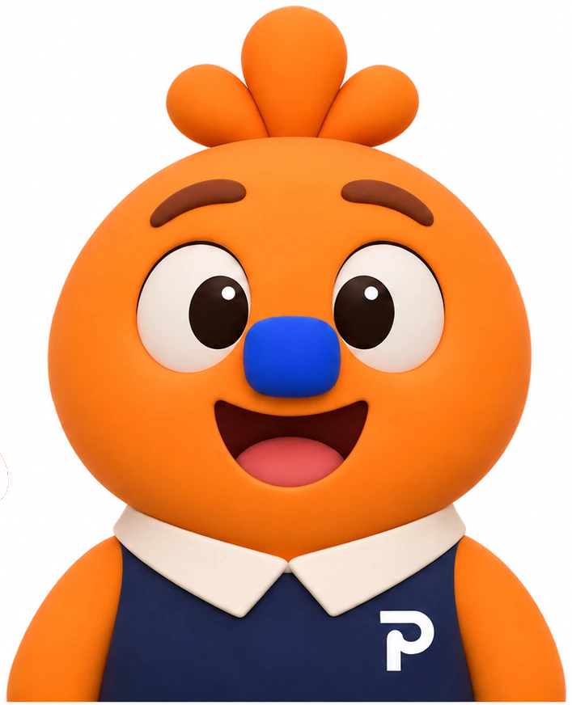
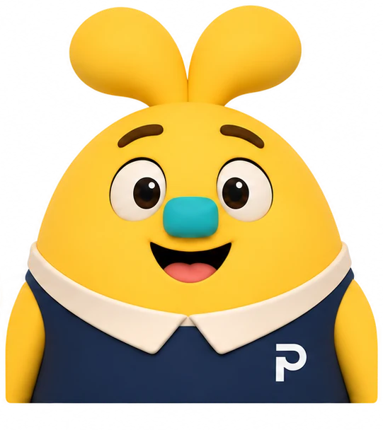

milk
milk mug
mug moon
moon mop
mop
For Parents5세 유치부 입학 안내
글자보다 먼저,
소리를 배웁니다
POLY Phonics는 『From Phonics to Reading K』로 알파벳 글자의 소리를 노래와 그림, 게임으로 익히는 5세 과정입니다. 입학 전에 실제 수업 콘텐츠를 아이와 먼저 체험해 보세요.

- Units
- 6Level K 단원
- Lessons
- 30한 레슨에 한 소리씩
- Song & Chant
- ♪레슨마다 노래와 챈트
- G-Learning
- +게임으로 다시 말하기
01Why Phonics
글자 이름보다
소리를 먼저 만나요
‘에이, 비, 씨’ 이름만 외워서는 단어를 읽을 수 없어요. 파닉스는 글자마다 어떤 소리가 나는지 익혀, 처음 보는 단어도 스스로 소리 내어 읽게 하는 방법입니다.
m+a+p=map
-
 i.
i.듣고, 따라 하고, 몸으로
‘m… m… m…’ 배를 문지르며 소리를 내고, 챈트로 리듬을 익혀요. 5세는 귀와 몸으로 먼저 배웁니다.
-
 ii.
ii.한국 아이에게 맞춘 지도
우리말 습관 때문에 m을 ‘므’처럼 읽기 쉬워요. 입술을 다문 채 ‘음~’으로 끝내는 연습까지 수업 안내에 담았습니다.
-
 iii.
iii.소리에서 문장까지 한 줄로
/m/ → milk, mug → Pour the milk in the mug. 배운 소리가 바로 단어와 문장으로 이어져요.
02Curriculum
5세 1년,
소리를 하나씩 차근차근
Level K는 6개 Unit, 30개 레슨입니다. Unit마다 다섯 소리를 배우고, 단모음으로 묶어 단어 읽기의 기초를 다집니다.
지금 보고 있는 과정 · 5세 Level K — 입학 첫 레슨은 Lesson 1 · Mm입니다.
Unit주제배우는 소리레슨
Unit 6에서는 Z를 배우고 짧은 모음 다섯 개를 다시 모아 본 뒤 긴 모음으로 넘어가요. 1년을 마치면 6세 Level A 읽기로 이어집니다.
03Lesson Flow
한 레슨은
이렇게 흘러가요
Lesson 1 · Mm 수업을 예로 들었어요. 그림으로 뜻을 먼저 알고, 노래로 소리를 듣고, 교재로 글자를 만나고, 게임으로 다시 말해 봅니다.
-
01Meaning First
그림으로 뜻 먼저
milk, mug, moon… 오늘 만날 단어를 그림 게임으로 먼저 익혀요.
Picture Match · 듣고 찾기 -
02Song & Chant
노래로 소리 듣기
알파벳송과 ‘m m m · m m milk’ 챈트로 소리와 리듬을 몸에 익혀요.
Sound Chant 4단계 -
03본학습
소리와 글자 잇기
‘Pour the milk in the mug.’ 라임을 읽고, /m/ 소리를 글자 M·m과 연결해요.
Learn and Say · Say It -
04본학습
찾고, 나누고, 써 보기
/m/로 시작하는 그림을 고르고, 4선 위에 Mm을 따라 써요.
Sound Sort · Trace and Write -
05G-Learning
게임으로 다시 말하기
배운 단어가 게임 속에 나와요. 듣고 고르고, 소리 내어 말하며 복습해요.
Toy Catch · Puzzle · Croco -
06Check
스스로 읽어 보기
배운 소리를 혼자 읽어 보며(Fluency Check) 레슨을 마무리해요.
Fluency Check
- 소리m
- 단어milk · mug
- 문장Pour the milk in the mug.
- 이야기Level A부터 이야기 읽기
04Try Lesson 1
1분 맛보기
Lesson 1 · Mm
교재 첫 레슨 활동을 그대로 옮겼어요. 소리는 모두 교재 공식 녹음입니다. 아이와 함께 눌러 보세요.
①소리 듣기
입술을 꼭 다물고, 배를 문지르며 ‘mmm~’‘므’처럼 모음을 붙이지 않는 게 포인트예요.
②/m/로 시작하는 그림 찾기
0 / 4그림을 누르면 단어를 들려줘요. /m/로 시작하는 그림 4개를 찾아보세요.
③문장으로 읽기
Pour the in the .
05Play & Try
입학 전에
먼저 놀아 보세요
수업 시간에 쓰는 노래와 정규 수업 콘텐츠, G-Learning 게임을 그대로 열어 두었어요.
노래 · 챈트
Phonics POND 수업 화면에 들어간 노래예요.


G-Learning 게임
혼자서도, 함께도
혼자 해요 — 5세가 혼자 할 수 있게 조작이 단순한 게임
함께 해요 — 부모님과 한 기기에서 번갈아 하는 게임
- 태블릿이나 PC의 가로 화면에서 가장 잘 보여요.
- 말하기 게임은 처음에 마이크 사용을 물어봐요. 허용을 눌러 주세요.


06FAQ
부모님이
자주 묻는 질문
Q15세에 파닉스, 너무 이르지 않을까요?
Level K는 읽기를 서두르는 과정이 아니에요. 노래와 동작, 그림으로 소리를 먼저 듣고 말하는 데서 시작해, 한 레슨에 한 소리씩 천천히 쌓아 갑니다.
Q2한 레슨은 어떻게 진행되나요?
Lesson 1을 예로 들면 소리 인식(5분) → 소리와 글자 잇기(10분) → 소리 분류(5분) 순서로 교재 활동을 하고, 따라 쓰기와 노래, G-Learning 게임이 이어집니다.
Q3집에서는 어떻게 도와주면 좋을까요?
이 페이지의 챈트를 아이와 함께 따라 불러 주세요. /m/처럼 입을 다무는 소리는 ‘므’가 아니라 ‘음~’으로 끝나게 들려주면 좋아요.
Q4체험 게임은 어떤 기기에서 하나요?
태블릿이나 PC의 크롬·사파리에서 가로 화면으로 하면 가장 잘 보여요. 말하기가 있는 게임은 마이크 허용이 필요해요.
Q56세, 7세에는 무엇을 배우나요?
Level K 다음은 6세 Level A, 7세 Level B로 이어져요. Level A부터는 소리 → 단어 → 문장 → 이야기 4단계로 읽기를 넓혀 갑니다.
